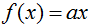
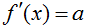
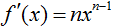
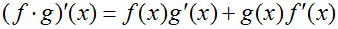
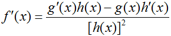

The Rules of Differentiation
Constant Rule
If and a is a
real number, then
and a is a
real number, then .
.
Constant Multiple Rule
If  and a is a real number, then.
Power Rule
If and n is a
real number, then
and n is a
real number, then.
Product Rule
If f and g are differentiable at x, then
Quotient Rule
If f is the quotient g(x)/h(x) and h(x) ≠ 0, then
Chain Rule
If g is differentiable at x and f is differentiable at g(x), then